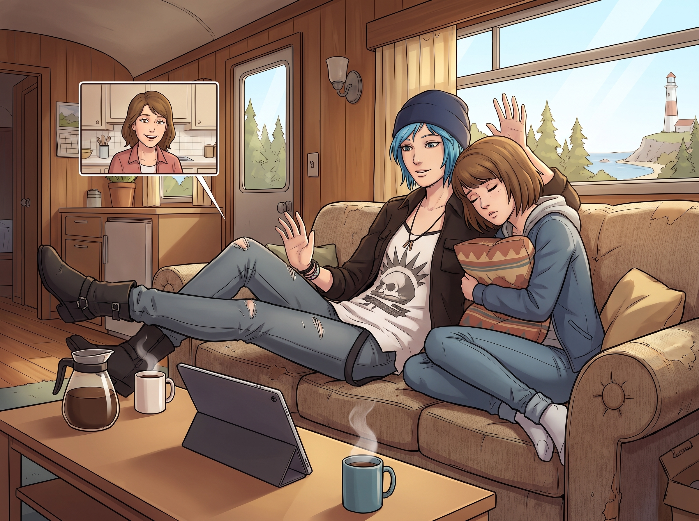

意猶未盡的讚譽

九月的一個週末早晨，二號車廂的起居區瀰漫著 Kate 剛煮好的咖啡香。在這條小鎮與 Chloe 雙保的奇蹟時間線裡，阿卡迪亞灣依然安然無恙。Chloe 此刻正四仰八叉地靠在沙發上，把 iPad 架在茶几上，跟遠在老家的母親 Joyce 進行每週一次的家庭視訊。Max 抱著抱枕，像隻睏倦的貓一樣靠在 Chloe 肩膀上，偶爾對著鏡頭揮揮手。
「所以妳們真的有在吃蔬菜嗎？Kate 上次說妳把花椰菜偷偷挑出來丟給外面的野浣熊了。」螢幕裡的 Joyce 繫著圍裙，一臉無奈又寵溺地念叨著。
「那是戰術性餵食，老媽！我在培養當地的野生動物情報網！」Chloe 大言不慚地胡扯，Max 在一旁翻了個大大的白眼。
就在這個溫馨的家常時刻，實習生 Lily 抱著她的黑色筆記本，腳步輕盈地走進了起居廂。她看到螢幕裡的 Joyce，立刻停下腳步，雙手交握在身前，露出了一個完美、甜美且極度乖巧的笑容。
「Joyce 阿姨，您好。我是畫廊的實習生 Lily，祝您有個美好的週末。」Lily 禮貌地打完招呼，然後轉向 Chloe，語氣切換成了某種令人毛骨悚然的專業匯報模式，「Price 學姐，關於您昨晚交代的『周邊安全巡檢』，我已經完成了。我在所有車窗的接縫處佈置了 0.05 毫米的隱形螢光防入侵標記；另外，我利用無人機對方圓五公里的無線電頻段進行了頻譜掃描，確認沒有未經授權的監聽設備。最後，針對昨天那個多看了我們車廂兩眼的郵差，我已經調閱了他的公開信用紀錄和社交媒體，確認他只是因為面臨離婚危機而精神恍惚，並非潛在的敵對偵察人員。報告完畢。」
整個起居廂陷入了短暫的死寂。Chloe 的嘴角劇烈抽搐了一下，正準備開口解釋這不是她教的，螢幕那頭突然傳來了一陣急促的腳步聲。
「等一下！剛才那個匯報是誰做的？！」
畫面一閃，Joyce 被溫柔地擠到了旁邊，留著標誌性小鬍子、神情嚴肅的繼父 David Madsen 把臉湊到了鏡頭前。他那雙經歷過戰場的銳利眼睛，正死死地盯著螢幕裡的 Lily，彷彿發現了什麼稀世珍寶。
「呃……David，這只是我們的實習生在開玩笑……」Chloe 試圖打圓場，她太清楚她這個有被害妄想症的前軍人繼父聽到這些會有多激動。
「閉嘴，Chloe，我在跟這位專業人士說話。」David 毫不客氣地打斷了繼女，目光灼灼地看著 Lily，「小女孩，妳剛才說妳對一個可疑的郵遞員進行了背景威脅評估？妳是怎麼做到不驚動對方的？」
Lily 眨了眨純潔的大眼睛，完全沒有被 David 的軍人氣場嚇到。相反，她推了推圓框眼鏡，用一種討論學術的溫柔語氣回答：「Madsen 先生，您好。久仰您在安保領域的專業素養。其實很簡單，我只是利用了開源情報。我寫了一個小型的爬蟲程式，交叉比對了他名下的水電費帳單滯納情況和最近的社群媒體關鍵字。在現代社會，資訊本身就是最致命的武器。」
David 的瞳孔瞬間放大了。他倒抽了一口涼氣，眼眶竟然微微泛紅。
「老天啊……」David 喃喃自語，雙手緊緊抓著平板的邊緣，「完美的非對稱偵察理念！極致的防禦性思維！小女孩，妳這套邏輯，簡直……簡直——」
David 話說到一半，突然被螢幕外傳來的一陣巨大的、金屬碰撞般的巨響打斷。緊接著是 Joyce 驚慌失措的呼喊：「David！後院的籬笆倒了！那隻鹿又跑進菜園了！」
「該死——！」David 猛地站起身，臉上寫滿了不甘心，他抓起平板匆匆對著鏡頭喊道：「這件事還沒完！小女孩，記住妳剛才說的每一個字，我們下次好好聊聊！Chloe，妳給我把她的聯絡方式留下來！」
畫面劇烈晃動了幾下，隨即傳來 David 衝出門外的腳步聲和一連串跟鹿搏鬥的混亂雜訊，通話就這樣在一片兵荒馬亂中匆匆掛斷。
起居廂裡陷入了短暫的沉默。
「他剛才是不是說『下次好好聊聊』？」Chloe 僵硬地轉過頭，看著身邊的 Max，聲音充滿了不祥的預感，「我怎麼覺得，我那個疑心病比誰都重的繼父，剛才差點就要對著我們的實習生說出什麼可怕的邀約？」
Max 皺著眉頭，看著已經合上黑色筆記本、乖巧地站在一旁的 Lily，嘆了口氣：「但願只是我多想。不過 Chloe，妳最好祈禱那隻鹿能多在他們家菜園裡待久一點。」
Lily 歪著頭，眨了眨無辜的大眼睛：「學姐們在擔心什麼呢？Madsen 先生看起來只是對開源情報技術很感興趣而已呀。」
聽到這句話，Chloe 和 Max 對視一眼，同時感受到了一股不祥的寒意——這場被野鹿意外打斷的對話，顯然只是個開場白，遠遠沒有真正結束。